Hola 👋, me llamo Yesica
UX/UI DESIGNER
Te invito a ver mis projectos.
 




Diseño UX/UI - Pagina web
Proyecto real. UX Research e interfaz de usuario de la web, desde 0.
Ver proyectoUX Research
Caso de estudio. Análisis y evaluación de oportunidades de mejora de una app.
Ver proyectoUX Writing
Caso de estudio. Diseño con foco en la redacción centrada en el usuario.
Ver proyecto